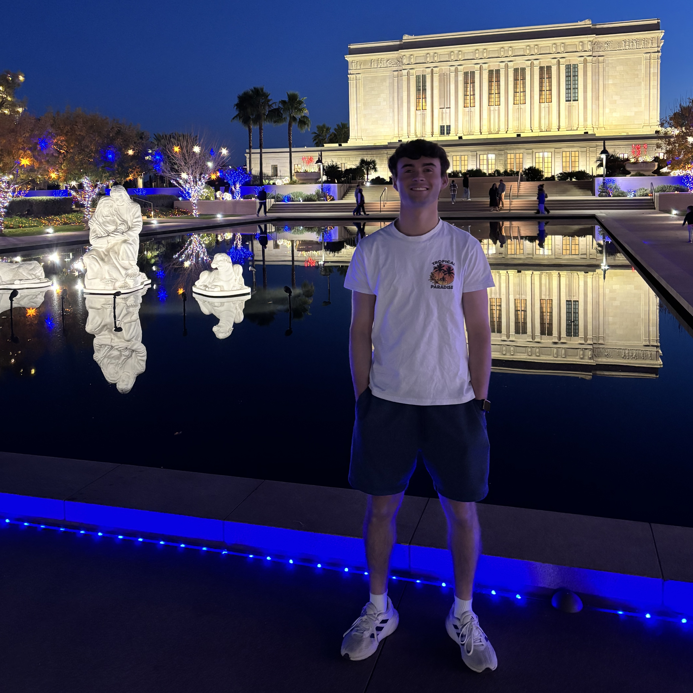

Overview
Welcome to my portfolio website! My name is Caden Andersen, and I'm an aspiring cybersecurity professional with a passion for technology, problem-solving, and protecting digital assets.
Purpose
This website serves as a showcase of my skills, projects, and experiences as I work towards a career in cybersecurity. My goal is to demonstrate my expertise in areas like penetration testing, digital forensics, and security engineering while continuously learning and growing in the field. Whether you're a business looking for security talent, a potential employer, or just someone interested in technology, I invite you to explore my work and connect with me!
Audience
This website is designed for businesses, recruiters, and professionals in the cybersecurity and technology industries who are looking for skilled individuals to join their teams. It is also valuable for:
- Hiring managers seeking cybersecurity professionals with technical expertise.
- Tech companies interested in security-focused talent.
- Colleagues and mentors who want to see my progress and provide guidance.
- Potential clients who may need cybersecurity consulting or services.
- My portfolio is built to showcase my technical skills, projects, and achievements, making it easy for businesses to evaluate my qualifications and understand how I can contribute to their organization.